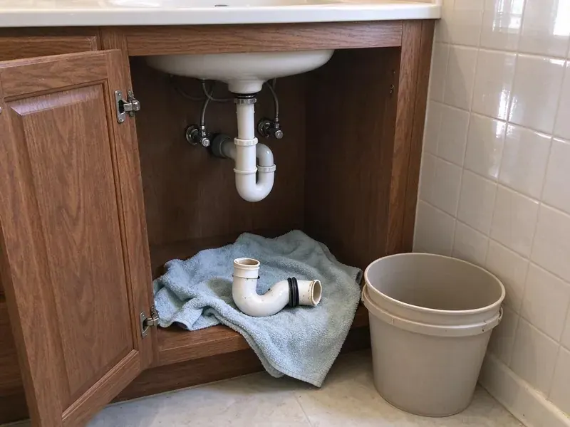

Well Pump Repair in Farmington, NM
Well pump failing in Farmington, NM? GVK Plumbing gets water flowing again fast, with stocked trucks and real test gear.
- Fast Local Response
- Clear Price Before Work
- Experienced Local Plumbers
- Workmanship Warranty

Low Pressure From Your Well in Farmington, NM?
We bring pressure gauges, amp meters and common parts so most repairs finish in one visit.
Well Pump Repair in Farmington, NM for Submersible Pumps, Tanks and Controls
GVK Plumbing knows a well is your only water source, so a failure means no showers and no toilets. No-water calls go first. Our trucks carry parts from Franklin Electric, Grundfos, Goulds and Well-X-Trol so most systems can be restored without waiting on a supply house order.
Our expertise includes:
- Bladder pressure tank diagnosis, recharge and replacement
- Pressure tank and switch testing
- Control box and splice repair

Additional Plumbing Repair Services in Farmington, NM
We offer expert plumbing repair services across Farmington, NM to stop leaks, clear blockages, and keep every fixture working the way it should.


Customers
Why Choose GVK Plumbing for Well Pump Repair in Farmington, NM?
Consistent pressure and clean water are what a repaired well should deliver for years. Both get checked before we go. We watch a full cycle on the gauge, check the precharge and chlorinate the well after a pull.
- Trained Well Techs, Our technicians keep up on current pumps, drives and repair methods.
- Water Knowledge, We understand New Mexico water conditions and what wells need in Farmington.
- Real Test Gear, Amp clamps, megohm meters and gauges pinpoint the failure before we pull anything.
Citywide Coverage
Anywhere in Farmington, NM, you can count on GVK Plumbing for a fast well pump visit. Our crews are spread out so a technician is never far from your property.
Experienced Team
The crew has years on Franklin, Grundfos SQ and Goulds systems, plus constant pressure controllers. Tricky pressure problems get solved faster because of it.
Safety-First Approach
Well systems combine high voltage and pressurized water, so we lock out power before working and test circuits before touching wiring. Electrical repairs follow code and manufacturer specs.
Trusted Certified Farmington Plumbing Services Professionals
At GVK Plumbing, we take pride in licensed, certified plumbing services throughout Farmington, NM. Those papers on the wall mean something. Our plumbers hold recognized industry credentials, and they follow strict safety and quality rules on every repair, installation and maintenance call we run.
Call Us Now PHCC Plumbing Contractor Recognition
PHCC Plumbing Contractor Recognition Better Business Bureau (BBB) Accreditation
Better Business Bureau (BBB) Accreditation Angi Certified Pro
Angi Certified Pro ISO 9001 Quality Management Certification
ISO 9001 Quality Management CertificationPump, Tank and Control Repair in Farmington, NM
Submersible Well Pump Repair in Farmington
Submersible pumps hang inside the well casing on drop pipe, often 100 feet or more below the wellhead. The usual signs are no water at all, weak pressure or a hum with no flow. Testing starts at the surface. If it has to come up, a pump hoist lifts the pipe safely, and we replace the burned motor, worn impellers or a bad check valve before setting it back.

Deep Well Pump Repair in Farmington
Deep wells get submersible pumps. They push water up, run quietly and last, but motors, impellers and splices still wear out. After pulling the pump, we test each part and replace only the failed one. Heat-shrink splice kits and a torque arrestor protect the new work in your Farmington, NM well.
Grundfos Well Pump Repair in Farmington
Grundfos SQ and SQE pumps have built-in electronics that protect the motor and report faults. Sensor failures and drive errors are the usual problems. GVK Plumbing reads the fault code, checks the wiring and tests the pressure sensor before replacing anything in a Farmington, NM well. Usually the electronics are fine.
Above-Ground Jet Pump Repair in Farmington
Lost prime is the number one jet pump complaint. Shaft seal leaks and worn impellers come next. The pump gets reprimed and resealed, and the foot valve and suction line get checked, because a single air leak will undo the work. Everything is above ground.
Low Water Pressure Diagnosis in Farmington
Weak pressure on a well is not always the pump. Common causes include a plugged sediment filter, a low switch setting or a yard line leak. In some cases the pump is fine and the well just cannot keep up with demand. We test each one.
Pressure Tank Problems in Farmington
Short cycling is the classic pressure tank symptom, with the pump clicking on and off every few seconds while a faucet runs. Usually the bladder has failed or the tank has lost its air charge. We check the precharge with the tank drained. It should sit about 2 psi below the cut-in pressure, so a 40/60 switch wants roughly 38 psi in the tank.
Control Box and Surge Repair in Farmington, NM
Three-wire submersible pumps rely on a control box with a start capacitor and a relay. Long stretches of drought dry out soil and contract it around buried pipes, which can lead to cracked sewer lines and leaking joints. Surges from lightning are the usual cause of control box failures. We test capacitors, relays and overload protection, replace what failed and recommend a surge arrestor at the box if one is missing. An arrestor costs little.

Well Pump Brands We Service in Farmington, NM
Goulds, Grundfos, Franklin Electric and Myers make most of the pumps we pull in this area, and GVK Plumbing services all of them. We work on old standard pumps and newer variable speed drives alike. Common parts are stocked. A pump with life left in it is worth repairing, and that saves the cost of a new motor and the labor to set it.
Well Pump Repair Near Me in Farmington, NM
Dry taps leave no time for searching. GVK Plumbing works throughout Farmington and treats a well failure as urgent. Our goal is a phone that gets answered and a truck that shows up the same day for homeowners on private wells.
Rural properties around Farmington, NM need a contractor who will actually work on wells, and GVK Plumbing does. Local geology and water conditions are familiar ground.
GVK Plumbing at a Glance
- Fully licensed plumbing team covering Farmington, NM
- Same-day appointments and 24/7 emergency response
- Clear written estimates, no hidden fees
- 4.8-star rated by 320+ New Mexico customers
Farmington Map
Farmington Information
- Population
- 46,237
- Area codes
- 505/575/435
- Service area
- Farmington and towns within a 40 mile drive
- Nearby
- Gallup, Los Alamos, Española, Rio Rancho
Long stretches of drought dry out soil and contract it around buried pipes, which can lead to cracked sewer lines and leaking joints. Well pumps around Farmington, NM also face sand and scale, so quick repair keeps the water on.
Expert Services
Call GVK Plumbing for reliable plumbing work done by licensed pros in Farmington, NM.
Our Specialized Plumbing Services in Farmington, NM
At GVK Plumbing, you get every kind of plumbing service from one company across Farmington, NM. We go from leak detection all the way to full system installations, for homes and commercial buildings, and we do it quickly at a fair price. Take a look at our core services below:


Our Well Pump Repair Process in Farmington, NM
Here is how we find and fix well pump problems without leaving you dry for long.
Call GVK Plumbing
Call (505) 581-4975 to schedule well pump repair. A few quick questions, then a time on the schedule.
On-Site Testing
A technician arrives at your Farmington home and tests the well system. We use meters and gauges to find the cause.
Price and Repair
We explain the problem and give you a clear price. Once you approve, we start the repair.
Frequently Asked Questions About Well Pump Repair in Farmington
Costs in Farmington run from about $400 for a minor electrical fix to $2,500 or more for a new submersible motor. The type of pump and the depth of the well drive most of the difference. You get the price after diagnosis, before any work starts, and it does not change once you approve it.
Check the pressure tank air charge once a year. A sealed well cap and a tank that holds its charge go a long way.
Start with the switch and the filter. Plenty of low-pressure calls come down to a dirty filter or a low switch setting. Past that, a bigger tank, a constant pressure drive or a booster pump may help, depending on what the well can produce.
A pressure switch swap takes a couple of hours. Changing a submersible pump in a deep well can run all day.
Submersible pumps commonly last 8 to 15 years, depending on run time, sand and water quality. A failing pressure tank that causes short cycling can shorten it badly.
Once a year is a good rule. Yearly inspections spot trouble early and extend pump life.
Power surges and worn parts top the list. Sand in the water and a bad tank or switch shorten pump life too.
Watch for sputtering faucets, pressure that rises and falls, air in the lines or a jump in the electric bill. Rapid clicking at the switch is another warning.
What People Are Saying About Our Plumbing Experts?

Megan L.
Our upstairs tub drained so slowly that every shower turned into a bath. GVK Plumbing pulled a wad of hair out of the stopper and then snaked the line past the trap. Three months later it still drains fast.
Drain Cleaning · Gallup, NM
Sofia M.
Two new toilets went in during one visit. The tech set them on new wax rings and swapped the old supply lines. He also noticed our bathroom faucet dripping and replaced the cartridge while he was there. No mess left behind.
Toilet Installation · Gallup, NM
Mark T.
The floor drain in our office break room backed up every few weeks. The plumber ran a cable, then put a camera down and found roots at a joint about thirty feet out. Seeing it on the screen made the decision easy.
Drain Cleaning · North Valley, NM
Diane F.
My kitchen faucet had dripped for months and I finally got tired of hearing it at night. GVK Plumbing came out the next morning, replaced the cartridge and the O rings, and tightened a loose base that was letting water under the sink.
Faucet Repair · Albuquerque, NM
Tyler J.
We bought a taller comfort height toilet for my dad, who just had knee surgery. The plumber pulled the old one, found the flange was cracked, and replaced it before setting the new bowl. Took about two hours.
Toilet Installation · Albuquerque, NMGreg S.
I manage a small strip center with six tenants. GVK Plumbing handles our annual backflow testing and fixed a recurring clog in the shared sewer line that had been backing into the nail salon. Their reports come in clean and on time.
Commercial Plumbing · Gallup, NM